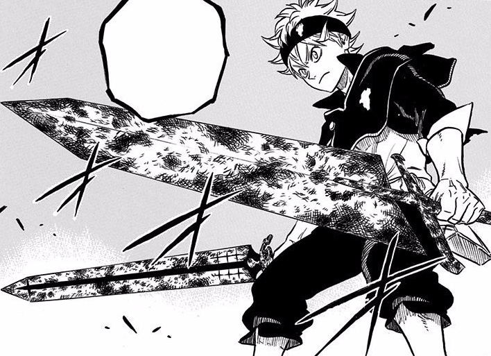
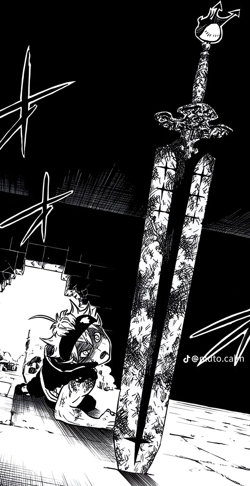
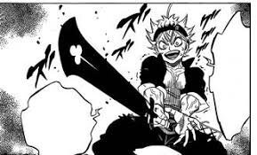
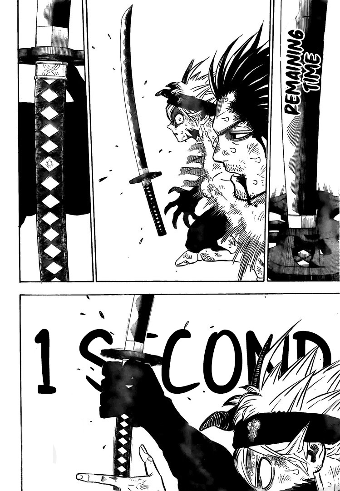

Asta de black clover possui 4 espadas imbuídas de anti-magia dentro do seu grimório de 5 folhas na qual habita um demonio.
Sua primeira espada é a Espada Matadora de Demônios

Começamos com a primeira espada do Asta em Black Clover, a Demon Slayer (matadora de demônios, em português). Ele conseguiu ela assim que ganhou seu grimório, pois essa espada estava selada dentro do grimório. É uma espada imensa capaz de anular qualquer energia e ela foi empunhada no passado pelo líder dos Elfos, o Licht.
Sua segunda espada é a Espada Habitadora do Demônio

Depois vem a Espada do Morador do Demônio, também anti-magia, e foi achada pelo Asta em uma masmorra. No passado, essa espada também foi empunhada pelo Licht. A grande habilidade dela é que, além de cortar magia, ela pode absorver magias e então liberar essa magia em um golpe poderoso.
Sua terceira espada é a Espada Destruidora de Demônios

A Espada Destruidora de Demônios foi achada numa masmorra flutuante e também foi empunhada pelo Licht no passado. Assim como as outras espadas, Asta absorve ela com seu grimório e se torna seu novo portador.
E por último temos a Espada Cortadora de Demônio

Por último, temos a espada Demon Slasher, que na verdade é a espada de Yami Sukhiro, só que modificada com a anti-magia do Asta. Durante a luta contra Dante, em um momento Asta não podia usar suas espadas, e é quando Asta empresta sua katana para ele, que foi coberta pela anti-magia, e ela também ficou escura e foi absorvida pelo seu grimório, se tornando um das suas espadas mais fortes.
Abaixo segue a ultima batalha que foi animada na série, aonde nessa batalha Asta e Yami estão combatendo Dante o receptáculo de Lucifero, nessa batalha Asta fica distante de suas espadas então yami empresta sua katana para Asta a embuir de anti-magia e derrotar Dante, o resto é spoiler veja o anime e entenda...
Melhor música tema do anime e a música que é reproduzida quando Asta entra em ação